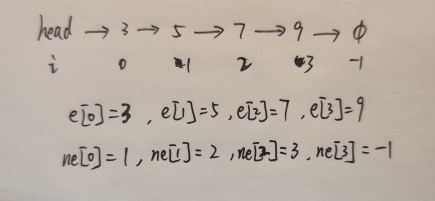

title: 数据结构
date: 2021-04-06 21:09:10
tags: 算法
用数组来模拟单链表：邻接表（存储图和数）

-1表示// head存储链表头，e[]存储节点的值，ne[]存储节点的next指针，idx表示当前用到了哪个节点
int head, e[N], ne[N], idx;
//初始化
void init() {
head = -1;
idx = 0;
}
//将x插入到头结点
void add_to_haed(int x) {
e[idx] = x;
ne[idx] = head;
head = idx;
idx++;
}
//将x插入到下标k以后
void add_to_k(int k, int x) {
e[idx] = x;
ne[idx] = ne[k];
ne[k] = idx;
idx++;
}
//将下标k的后面节点删除
void remove_k(int k) {
ne[k] = ne[ne[k]];
}
// 将头结点删除，需要保证头结点存在
void remove_head()
{
head = ne[head];
}
双链表：优化某些问题
链表索引不按顺序，按插入顺序idx的值排列！！！
第k个插入的数并不是指当前链表的第k个数，而是idx为k+1的数！！！
const int N = 100010;
//e[N]表示节点i的value值
//idx 存储当前已经用到哪个点
int e[N], l[N], r[N], idx;
//链表索引不按顺序，按插入顺序idx的值排列！！！
//第k个插入的数并不是指当前链表的第k个数，而是idx为k+1的数！！！
//初始化
void init() {
//0表示左端点，1表示右端点
r[0] = 1, l[1] = 0;
idx = 2;
}
void D(int k) {
r[l[k]] = r[k];
l[r[k]] = l[k];
}
void IR(int k, int x) {
e[idx] = x;
r[idx] = r[k];
l[idx] = k;
l[r[k]] = idx;
r[k] = idx;
idx++;
}
void IL(int k, int x) {
IR(l[k], x);
}
void L(int x) {
IR(0, x);
}
void R(int x) {
IR(l[1], x);
}
const int N = 100010;
int stk[N];
int tt = 0;
int x;
void push() {
cin >> x;
stk[++tt] = x;
}
void pop() {
tt--;
}
void empty() {
if (tt > 0)cout << "NO" << endl;
else cout << "YES" << endl;
}
void query() {
cout << stk[tt] << endl;
}
// hh 表示队头，tt表示队尾
int q[N], hh = 0, tt = -1;
// 向队尾插入一个数
q[ ++ tt] = x;
// 从队头弹出一个数
hh ++ ;
// 队头的值
q[hh];
// 判断队列是否为空
if (hh <= tt)
{
}